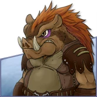

Humains
Les humains sont une race intelligente, provenant du continent nord. Étant une des premières races à avoir colonisé le continent central, leurs cultures tendent à être les plus diverses et répandues. Ils ont construit de nombreuses villes et même des pays sur le continent central, et tout ce qui reste de leur passé dans le Nord sont quelques tribus nomades éparpillées.
Leur artisanat racial est la Fusion de Bijoux (Humains) (création de gemmes pour armes et armures).
Zumis
Les petits Zumis sont une race créative, aimant innover et commercer. Ils proviennent des lointains déserts arides du Sud-Ouest et une théorie affirme que cette existence désertique a laissé leurs esprits ouverts aux inspirations du cosmos (il est important de noter que ce point de vue romanesque a été émis par les Zumis eux-mêmes). Ils ont voyagé vers le continent central pour profiter des énormes opportunités commerciales qu'il offre et s'entendent généralement bien avec les autres races. Cependant, ils méprisent les Grenouilles Anuran, les considérant trop frivoles et obtus aux arts scientifiques.
Leur artisanat racial est l'Ingénierie (fabrication d'objets donnant divers bonus).
Anurans
Avant leur voyage vers le continent central, les Anuran vivaient assez isolés au continent du Sud-Est. Après être entrés en contact avec d'autres races, leur curiosité a pris le dessus et leur timidité s'est envolée. Il se sont bien adaptés, devenant sociables et de bonne compagnie, amicaux et hospitaliers. Leur structure sociologique a également évolué, et ils sont désormais connus pour leur grand sens de l'humour. Leur artisanat racial est l'Alchimie (création de potions augmentant les capacités des personnages, ainsi que des teintures spéciales pour coiffes et habits ).
Ursun
Les Ursun sont une race soudée venant des hautes montagnes du continent central. L'histoire et la culture sont sacro-saintes pour eux, car ils en ont beaucoup. Il y a plusieurs centaines d'années, tous les Ursun vivaient sous la loi d'un grand Roi, mais un conflit pour le trône a divisé le royaume en deux factions belligérantes. L'usurpateur a échoué mais a mené ses adeptes dans les basses terres. Bien qu'il soit mort depuis longtemps, ses adeptes continuent encore la guerre de nos jours. Leur artisanat racial est le Décryptage de Glyphes (fabrication de glyphes de classe donnant un bonus)
Ezelins
Les Ezelins sont semblables à des enfants humains. Ils sont connus pour être espiègles. Auparavant, ils étaient connus sous le nom d'Enfants Eternels. Ils proviennent de cristaux bleus semblables aux autres Gardiens Eternels. Leur artisanat racial est le Tissage (améliore l'efficacité des trophées).
Torturrans
- Race ancestrale
- Herbologie, magie ancienne
- Conseiller et intelligent
- Antihéros : culte sombre
Les Torturrans foulaient déjà le sol d'Eden alors que les rivières n'avaient même pas encore rempli les mers (origine continent sud-est comme les Anurans ?). Ancienne comme aucune autre, cette race est célèbre pour son savoir accumulé dans les herbes traditionnelles, la magie et les secrets perdus. Avec le temps, ils sont devenus un symbole de bons conseils et d'intelligence. Malgré cela, un culte s'est formé parmi la race. Ce culte exécute de sombres rituels, et bien que ces pratiquants soient une minorité, leur notoriété grandit.
Tuskars
Comme les Ursuns, les Tuskars viennent du continent central. Leur territoire s'est agrandi en même temps que leur population, s'étendant dans toutes les basses terres. Bien que pas vraiment méchants, leur féroce réputation et leur nature vicieuse leur ont fait gagner peu de confiance. {C Les Tuskars ne réfléchissent pas beaucoup avant d'agir, et ils ne réalisent souvent que leurs actions auront des conséquences que lorsque ces conséquences ont déjà commencé.
Drakais

Les origines des Drakais sont inconnues et ils se réjouissent de ce mystère. Ils sont très sociaux, formant des clans familiaux très soudés sans rapport avec les liens du sang. À part cette tendance, on ne sait pas grand chose à leur sujet. Ce sont de puissants magiciens, ne faisant pas que tremper dans la nécromancie et la destruction, ils les glorifient également. Malgré cela, ils n'ont en quelque sorte pas grand chose dans le crâne et sont facilement manipulables pour commettre des mauvais actes pour d'autres.
Ogres
Les Ogres passent la plupart de leur temps à se battre. Ils ne quittent jamais un combat et se réjouissent particulièrement lors des massacres.Bien qu'ambitieux, ils ne sont pas très malins et finissent souvent comme soldats d'infanterie dans les armées humaines.